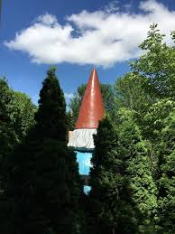
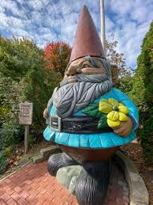

Visit Iowa
World's Largest Concrete Garden Gnome

Iowa is home to the largest concrete garden gnome in the world. A magnificent sight, this gnome will be sure to top all other garden gnome one has seen, in fact, one may not even want to see another garden gnome in their life after witnessing this. This is only the beginning of the wonders one may find when visiting Iowa. The gnome, located in Ames, was built by two people with too much free time on their hands, Andy and Connie Kautza, and is located in Reiman Gardens at Iowa state university. The gnome's primary residence, being at a university, showcases the educational priorities of Iowa. The gnome also has a name, "Elwood." This showcases the comedic ability of the Iowan people, as the gnome, being made of concrete, has a name containing 'wood' in it while not being made of wood, displaying the wittiness of the Iowan people.
Additional Images

